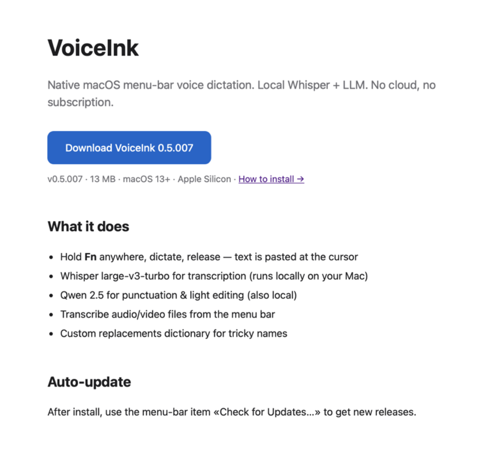
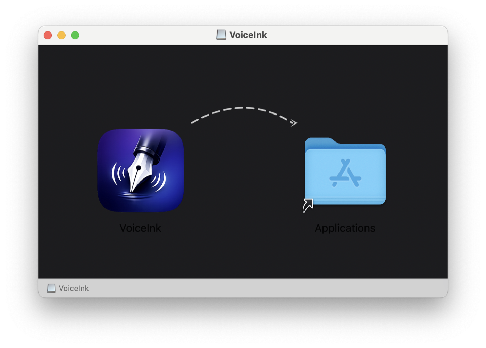
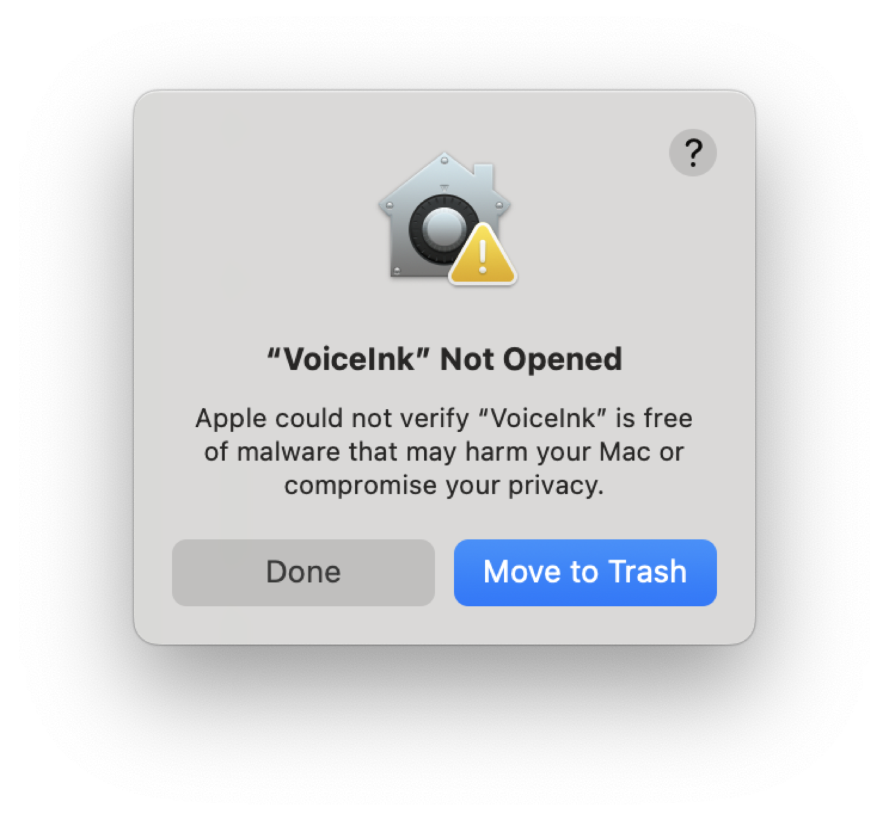
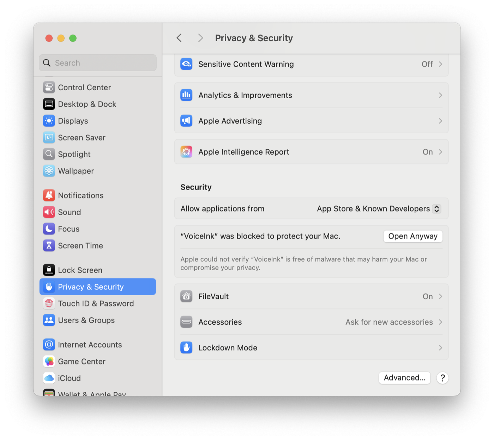
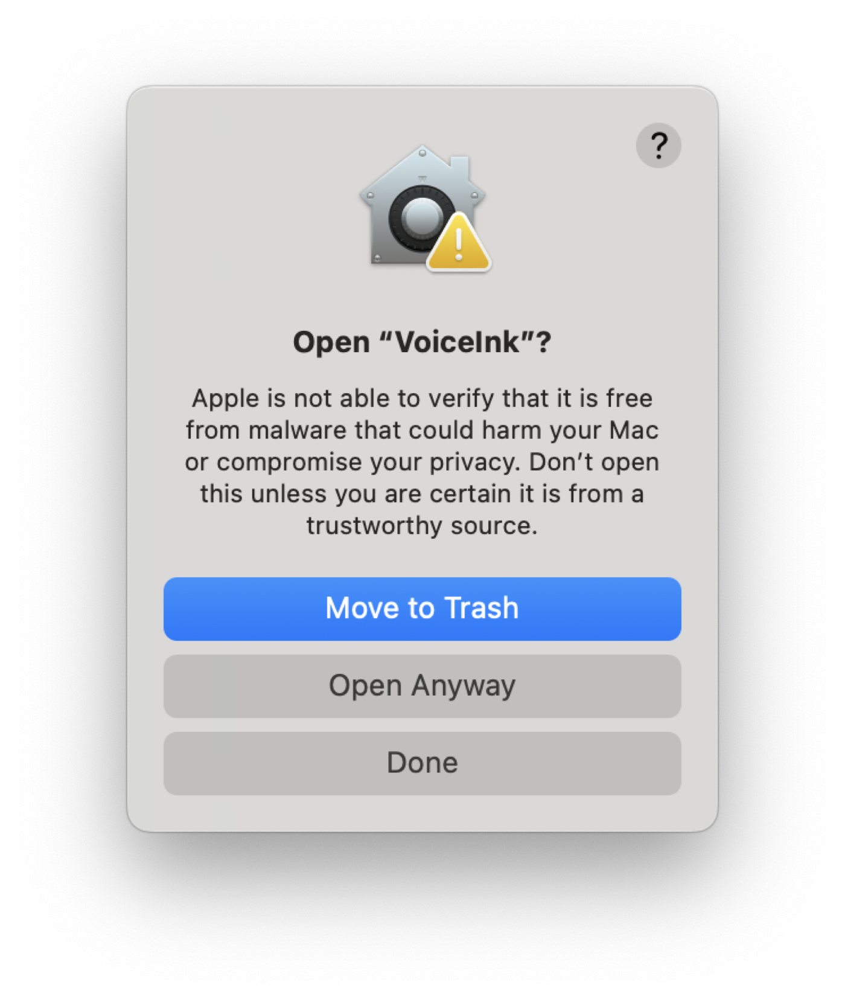
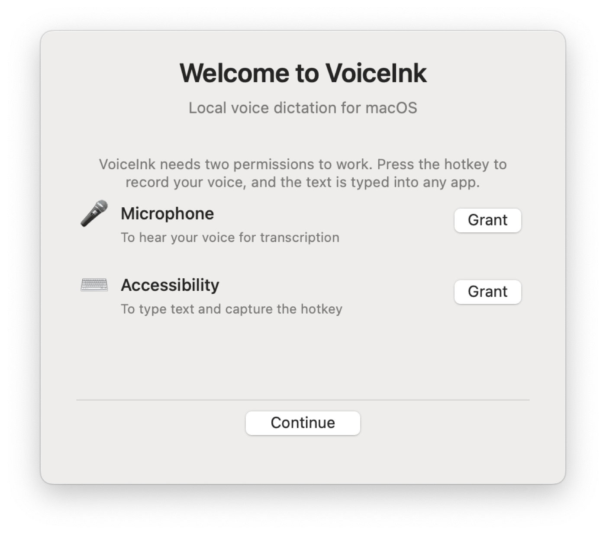
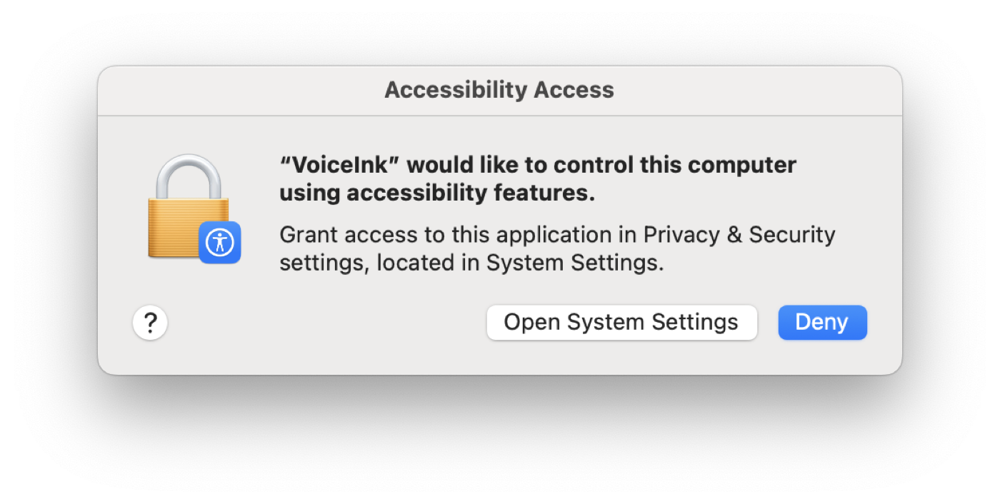
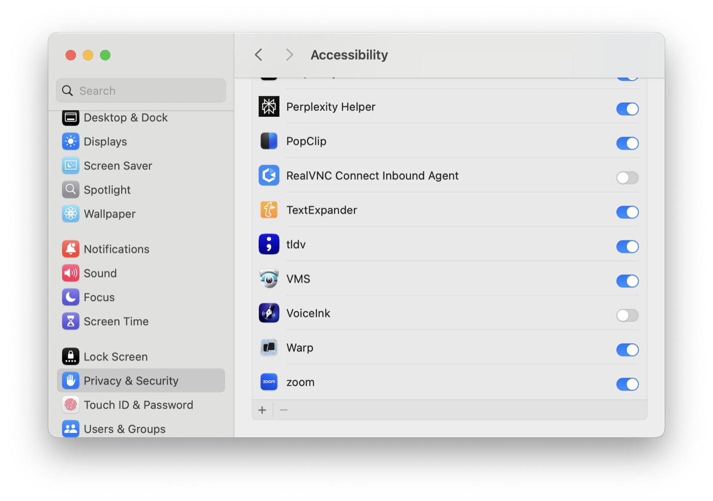
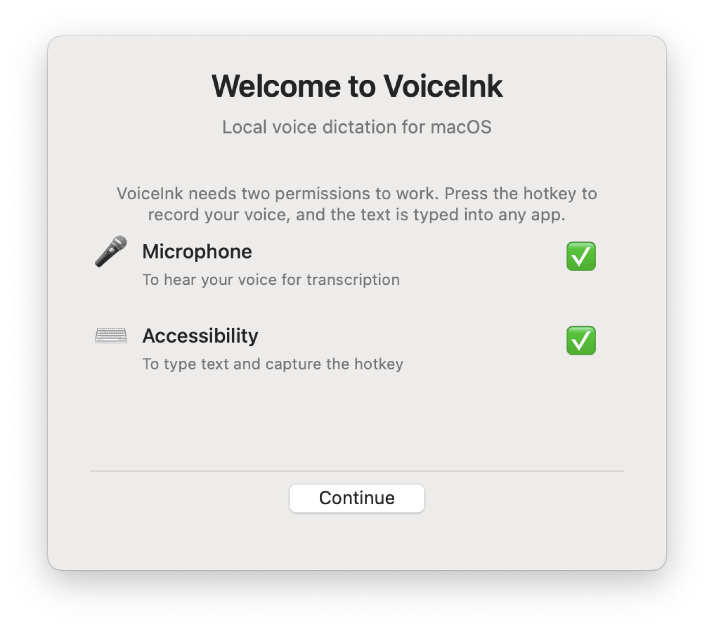
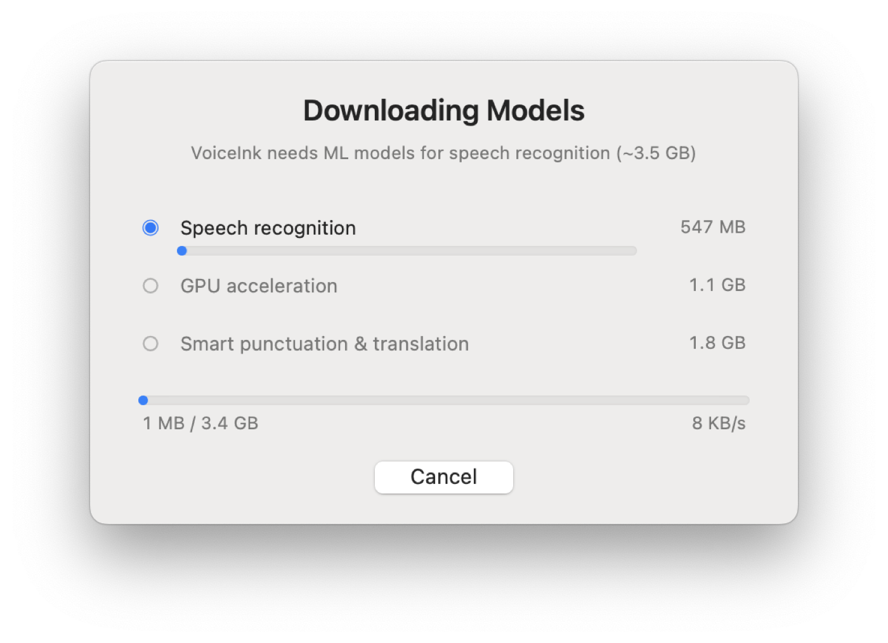

First-time setup on macOS Sequoia (15+). About 5 minutes plus the model download.
On the home page, click Download VoiceInk. Your browser may ask you to confirm the download — allow it.

The file is named VoiceInk-X.Y.ZZZ.dmg (around 13 MB). Open it from your Downloads folder.
The DMG opens a window with the VoiceInk icon on the left and the Applications folder shortcut on the right. Drag the icon onto the Applications folder.

When the copy finishes, eject the DMG (right-click on it in Finder → Eject).
Open Applications in Finder, then double-click VoiceInk. macOS Sequoia will show a blocking dialog:

Open System Settings (Apple menu → System Settings), then click Privacy & Security in the sidebar. Scroll down to the Security section — you'll see a line saying "VoiceInk" was blocked to protect your Mac, with an Open Anyway button next to it:

Click Open Anyway. macOS will ask for your password.
One more confirmation dialog appears. This time the Open Anyway button is enabled:

Click Open Anyway. VoiceInk launches. You won't see these Gatekeeper dialogs again on this Mac.
On first launch VoiceInk shows a welcome window asking for two permissions:

Click Grant next to Microphone. macOS will show a standard permission dialog — click Allow. The Microphone row gets a green check.
Click Grant next to Accessibility. macOS shows an explainer dialog:

Click Open System Settings. System Settings opens to Privacy & Security → Accessibility. Find VoiceInk in the list and flip its toggle on:

You may need to enter your password. Close System Settings and return to the VoiceInk welcome window — both rows should now show a green check:

Click Continue.
VoiceInk runs everything locally — no cloud — so on first launch it downloads the speech-recognition and punctuation models (~3.5 GB total). Progress is shown:

The download is split into three components:
You can keep using your Mac while this downloads. Once complete, VoiceInk is ready and the menu bar icon turns from loading state to the microphone icon.
VoiceInk lives in the menu bar (top right of your screen, next to the clock and battery). Look for the microphone icon.
Open any text field — a Slack message, Notes, an email draft. Then:
The text appears at the cursor a second later, punctuated and clean. The menu bar icon changes color while recording (blue) and post-processing (purple).
That's it. The first dictation may take 5-10 seconds to warm up — subsequent ones are near-instant.
Yes. The Gatekeeper dialog makes "Move to Trash" the default because Apple's strict assumption is that any unverified app is suspicious. VoiceInk is signed by a Developer ID and notarized by Apple — your Mac just hasn't checked the notarization ticket against Apple's servers yet, which is the normal first-launch flow. Click Done, go to System Settings → Privacy & Security → Open Anyway (step 4), and you're set.
The Open Anyway button only appears within about an hour of the blocked launch attempt. If you waited too long, just open VoiceInk from Applications again — the Gatekeeper dialog will reappear, and Open Anyway will show up in Privacy & Security again.
Two common causes:
voiceink process. If it's missing, re-launch from Applications. If it crashes on relaunch, check ~/Library/Logs/DiagnosticReports/ for a crash report and send it to us.Accessibility permission isn't granted. Open System Settings → Privacy & Security → Accessibility and confirm the toggle next to VoiceInk is on. If it's already on, turn it off and on again — sometimes macOS needs a nudge after toggle changes.
Same fix as above — Accessibility permission. VoiceInk uses Accessibility to simulate Cmd+V. If the toggle is on but paste still fails, restart VoiceInk from the menu bar (right-click icon → Quit, then re-launch from Applications).
The download pulls from GitHub. If your network blocks GitHub or has spotty connectivity, the progress bars stall. Cancel the dialog, check your connection, then re-launch VoiceInk — it resumes from where it left off.
~/.config/voiceink/voiceink.log — rotated when it hits 1 MB (previous log saved as voiceink.log.old).